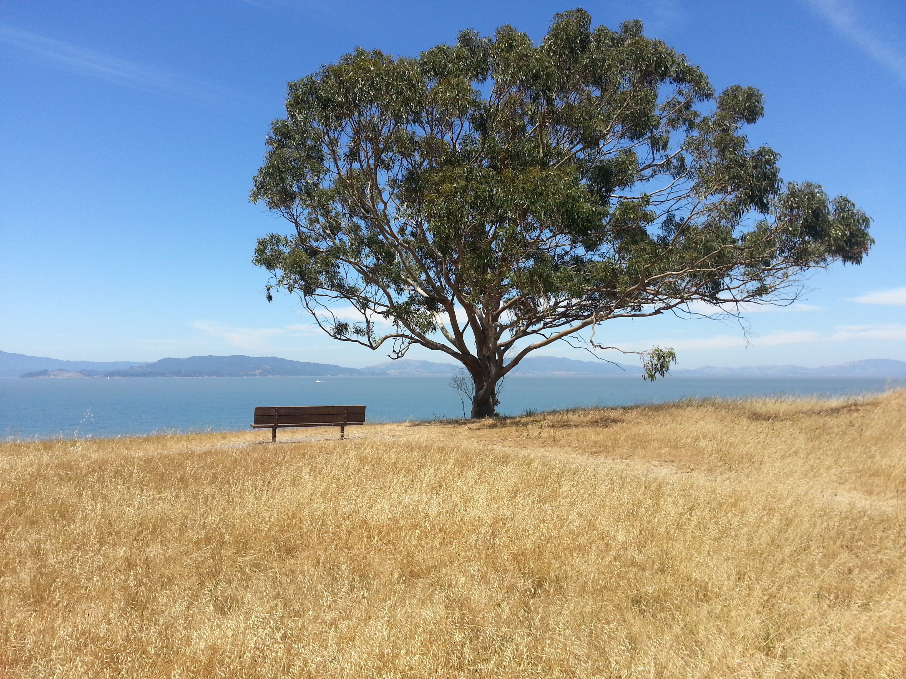

Eric Turner, PhD
Welcome
I'm a software engineer who enjoys hiking, pencil sketching, and overly cerebral scifi movies.

Photo taken in a hike in the San Francisco Bay area in June 2016.
I received my Ph.D. at the Video and Image Processing Lab at U.C. Berkeley. Specifically, my thesis focused on indoor modeling and surface reconstruction.
Using a backpack-mounted system equipped with cameras, laser scanners, and internial measurement units, we reconstructed virtual models of indoor enviornments:

The output of this system can be modeled in various levels of detail:
Wide-view of a small model of our office area.
Close-up of my cubicle in this model.
The hallway outside our offices.
A low-resolution version of the same hallway.
Here's an interactive version with one of the simplest models. This represents a single conference room in my building, with rows of chairs and a table at the front.